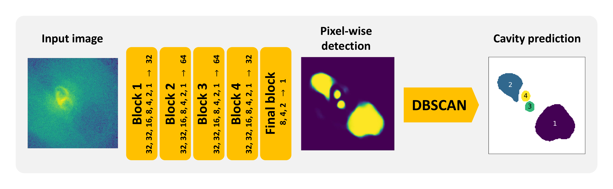

CADET is a machine learning pipeline trained for identifying surface brightness depressions (so-called X-ray cavities) on noisy Chandra images of elliptical galaxies. The pipeline consists of a convolutional neural network trained for producing pixel-wise cavity predictions, which are afterwards decomposed into individual cavities using a DBSCAN clustering algorithm.
The pipeline was developed as a part of my Diploma thesis (pdf) to improve the automation and accuracy of the detection and size-estimation of X-ray cavities. The architecture of the convolutional network consists of 5 convolutional blocks, each resembling an inception layer, and it's development was inspired by Fort et al. 2017 and Secká 2019. The utilized clustering algorithm is the Sklearn implementation of the Density-Based Spatial Clustering of Applications with Noise (DBSCAN, Ester et al. 1996).

The convolutional neural network was trained on artificial images which were produced from generated 3D beta models (Cavaliere et al. 1978) into which we randomly inserted ellipsoidal cavities. The parameter ranges and distributions used for generating models of galaxies and X-ray cavities were estimated from the measurements of nearby galaxies (for more info see the Diploma thesis). Besides the cavities, we added also other typical features such as central point sources, bright rims around cavities and also antisymmetric spiral perturbations resembling gas sloshing (see image below) to imitate the gas distribution of real galaxies. The produced models were summed into 2D images a noised using Poisson statistics to resemble real Chandra-like images. The corresponding labels were produced similarly by summing the ellipsoidal cavity masks into 2D images and binning them to contain either ones (inside the cavity) and zeros (outside of it).

We have trained two separate networks using different sets of artificial images:
one purely with galaxies containing cavities (CADET_size) and the second with
50 percent of galaxies lacking any cavities (CADET_search). The first network
was further optimized for the proper estimation of cavity sizes, while the second network
was tuned to suppress false positive cavity detections. For both networks, 300 000
artificial images and corresponding labels were generated for training, 10 000 for
validation and 10 000 for testing of the network. Their parameters were drawn from
identical ranges and distributions. Using 64 cores on Intel Xeon Silver 4216 CPU,
the data generation process took nearly 18 hours. The dataset was generated by the
generator.py script, which loads the distributions of the parameters stored in
the CADET_size_params.csv and CADET_search_params.csv files and uses the beta
model class in the beta_model.py module. Functions utilized for generation of
ellipsoids and 3D array rotations contained in the beta_model.py module are inspired
by the pyellipsoid package.
The networks were trained using the ADaptive Moment Estimation (ADAM) optimizer
and the minimized loss function was the pixel-wise binary cross-entropy.
The pipelines were trained for 5 epochs with 8 images per batch while using all of
the training images in each epoch. The training was performed using an NVIDIA GPU
type GeForce RTX 2080 SUPER (8 GiB) and lasted approximately 6 hours for both pipelines.
Requirements
libraries required for using the CADET pipeline:astropykerasmatplotlibnumpyscipysklearntensorflowplotly (optionally)additional libraries for data generation:
concurrent
Usage
The CADET pipeline inputs either raw Chandra images with units of counts
(numbers of captured photons) or normalized processed background-subtracted
and/or exposure-corrected images. When using flux images for instance, try
normalizing them by the lowest pixel value so all pixel values are higher
than or equal to unity. The input image is afterwards automatically scaled
by a logarithm and normalized by the highest pixel value. Currently only
128x128 images are supported, however, an improvement that would enable
arbitrarily sized images is under development (so-far the images were cropped
and re-binned via ciao_contrib (CIAO 4.13), however, an Astropy version is being developed).
Both the CADET_search> and CADET_size pipelines
are composed as self-standing scripts. Discrimination threshold for the CADET_search
pipeline was set to 0.9 to suppress false positive detections, while the threshold of the
CADET_size pipeline was set to 0.55 so the predicted volumes are not underestimated
nor overestimated (for more info see the Diploma thesis).
However, the thresholds of both pipelines are changeable and can be set to an arbitrary value between 0 and 1.
The scripts can be run by simply calling (possibly with a threshold parameter - float from 0 to 1):
$ python3 CADET_size.py foldername [threshold]
and
$ python3 CADET_search.py foldername [threshold]
which uses all .fits files in the corresponding folder
foldername) and saves their raw cavity predictions into the
.fits files while also properly preserving the WCS coordinates.
On the output there is also a .png file showing decomposed
cavities and a .txt file containing calculated areas and cavity volumes.
The volumes of X-ray cavities are calculated under the assumption of a
symmetry along the direction from the galactic centre into the centre of
the cavity (center of mass). The cavity depth in each point along
that direction is assumed to be equal to its width. Thereby produced 3D
cavity models can be alternatively viewed or stored in the .npy
format for further use (e.g. cavity energy calculation).
Convolutional part
The convolutional part can be used separately to produce raw pixel-wise predictions. Since the architecture of the convolutional network was implemented using the functional *Keras* API, the architectures together with trained weights could have been stored in the HDF5 format (CADET_size.h5, CADET_search.h5). The trained models can be simply loaded using theload_model Keras function.
```python from keras.models import load_model from keras.layers import LeakyReLU model = load_model("CADET_size.h5", custom_objects = {"LeakyReLU": LeakyReLU}) y_pred = model.predict(X) ```
The network inputs 128x128 images. However, to maintain the compatibility with *Keras*, the input needs to be reshaped as `X.reshape(1, 128, 128, 1)` for single image or as `X.reshape(len(X), 128, 128, 1)` for multiple images.
Example
Here we present an example of the pipeline being used on real Chandra images of giant elliptical galaxies.Todo
The following improvements for the data generation and training processes are currently planned:- speed up the data generation using Tensorflow and GPU
- enable inputting arbitrarily sized images
- add other features (cold fronts, point sources)
- improve existing features (bright rims, gas sloshing)
- examine various other CNN architectures
- restrict the cavity predictions using output regularization